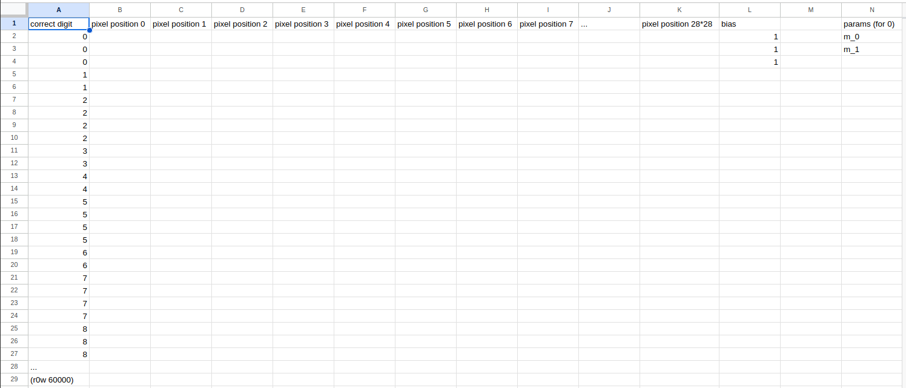

Training a Digit Classification Model using MNIST Dataset (part 2)
Learning_Robot.png
In part 1, we created a baseline for MNIST classification without using any ML/DL tools. The best we got was an accuracy of 81.73%; that’s our target to beat with some new models!
Now we can move onto actually doing ML and DL. We’ll get into the difference shortly. First we just want to a quick code reproduction of part 1 so that we can use the output from the code and load it into memory.
#hide! [ -e /content ] && pip install -Uqq fastbookimport fastbookfastbook.setup_book()from fastai.vision.allimport*from fastbook import*path = untar_data(URLs.MNIST)# Go crazy with list comprehensions and make all the datasets we needdef create_dataset(top_dir):# takes a top level directory and makes the aforementioned list of 3d tensors for each digit# grab each of the paths for each digit directory in this folder mnist_datatype_digit_paths = [p for p in top_dir.ls().sorted()] sample_images = []for p in mnist_datatype_digit_paths:# grab the path to each image included for the current digit training_digit_im_paths = [im_path for im_path in p.ls().sorted()] # open the image as tensors for each included image training_image_tensors = [tensor(Image.open(im)) for im in training_digit_im_paths] # turn the list of several pixel intensity matrices into a single 3D tensor stacked_digit_tensors = torch.stack(training_image_tensors).float() /255 sample_images.append(stacked_digit_tensors)return sample_imagesmnist_dataset = {}mnist_dataset["training"] = create_dataset((path/"training"))mnist_dataset["testing"] = create_dataset((path/"testing"))
Machine Learning vs Deep Learning
We are now going to solve this problem using machine learning. “Machine Learning” is a broad field that is all about a computer “learning” patterns in data, and then using those insights to make predictions or decisions. Typically there is a mathematical model that enables us to learn and apply what we’ve learned. “Deep Learning” is a subset of ML. In DL we use layered models to do the same thing on more complicated data.
First we’re going to focus on machine learning. Then we’ll change our model to incorporate deep learning techniques.
Explaining “Learning”
How can we actually say that a computer “learns” something? They obviously don’t have brains. This notebook created by Jeremy Howard gives a pretty great explanation. But I’ll give my own attempted summary.
Our goal is to find a way to predict data we don’t have using data we do have. Typically, the data is something like a spreadsheet. Often there is some sort of input and output. We want to determine a way to use math to relate the inputs and the outputs of the data that we do have. If we can get that right on the data we do have, we can be relatively confident we can use it for future predictions.
Salary v Spending Example
If we were relating salary vs monthly spending, we’d probably expect a fairly linear relationship. We might expect something like:
If we had that data for several hundred households, we could probably estimate the values of \(m\) and \(b\). If we could do this, then we would say that our computer “learned” something. We could then apply those “learnings”. If we had the income of other people (but not their spending) we could use this model to predict their spending.
So that’s how we can say that a machine has “learned” something; it has estimated the parameters of a mathematical function that we think approximates the trend of the dataset accurately.
Applying ML to MNIST Dataset
My goal here is to create something where I give it an image and it tells me the likelihood that the image is each of the 10 digits. I don’t just want it to work for this dataset, I want it to work for any image.
Actually applying these concepts in code was pretty hard for me. I didn’t just use the easy high-level fastai provided code (libraries), I had to get into the details and create most of the training loop myself. The first thing I had to do was format the data for this process. To get this to work properly, each image needs to be associated with a label. I also had to reformat the tensors so the computer could process them better.
Code
# Set up training and validation datasetsdef test_train_labels_aligned(md, dtype, train_x, train_y): training_digits =0for d inrange(len(md[dtype]) -1): training_digits +=len(md[dtype][d])assert(train_y[training_digits -1] == d)assert(train_y[training_digits] == d +1)train_x = torch.cat(mnist_dataset["training"]).view(-1,28*28)train_y = tensor([d for d, items inenumerate(mnist_dataset["training"]) for _ in items]).unsqueeze(1)# test that the labels lign up correctlytest_train_labels_aligned(mnist_dataset, "training", train_x, train_y)valid_x = torch.cat(mnist_dataset["testing"]).view(-1,28*28)valid_y = tensor([d for d, items inenumerate(mnist_dataset["testing"]) for _ in items]).unsqueeze(1)test_train_labels_aligned(mnist_dataset, "testing", valid_x, valid_y)# Zip x and y together for each datatypedset_training =list(zip(train_x, train_y))dset_validation =list(zip(valid_x, valid_y))
This was pretty straightforward, but then I really struggled with how to do ML for 10 digits:
“Ugh this is hard. I pretty much just thought for like a few hours straight and overnight. Turning this problem into a spreadsheet was my first step and I should include it here…”

“Sketch Spreadsheet”
Thought Process Continued:
“I think its like, you basically want a model with 10 sets of weights and biases that each do binary prediction that a photo is a digit. So you probably have to train 10 models? How to turn this into a training loop though. But what if the (hold on, eureka incoming) what if the parameters w and b are mega tensors? So 3D tensors that have an axis that contains all the digit data predictions together? Because the thing that’s hard is the output should NOT be a number between 0 and 9. That would imply that a 2.5 would be an image that is most similar to 2 and 5, but 2 and 5 are not similar looking digits. So we have to do multi-factor classification. I’m sure there is some official way to do this but I want to try doing it myself first.”
A Detour into Binary Classification
It was so hard I took a step back. I needed to refresh my memory on how to do all this. I ended up rewriting a binary classification training loop for the digit 0. This model should be able to determine if any image is a zero or not a zero.
Stochastic Gradient Descent
More fancy words to make simple things sound complicated. We talked earlier about the fact that “learning” means estimating the parameters of a model (math equation, function) that fits our dataset. How do we use a computer to estimate the parameters of a function? We use Stochastic Gradient Descent (SGD). The linked notebook goes into really good depth on what exactly this is. Before we start applying this step, we really need to decide on a model. We use a linear model in this notebook for our machine learning example because its one of the simplest models there is.
Steps for SGD
Decide on a model: We have chosen the linear model \(y = mx + b\)
Initialize parameters: We come up with some random guesses for our parameters \(m\) and \(b\).
Predict: We use our data and our initial parameters to make a prediction. The first time we do this we will always have a very poor prediction.
Calculate the loss: We haven’t really talked about loss yet. We brushed on it in the last post. Basically, we need a numerical way of determining how wrong we are. We compared L1 norm and L2 norm (RMSE) in the last post, and it turned out that RMSE worked better for our dataset and current use case. Keep in mind that this is now another equation. Our model is about predicting the data, and our loss is about estimating the accuracy of our data. Two different equations.
Calculate the Gradient. And here’s the hardest math part. Again here’s Jeremy’s SGD Post. Very basically, we use calculus to determine how much each parameter needs to change so that when we make our next prediction, our loss is smaller. We can use these numerical methods so we don’t have to make a random guess for our next estimate, it will be a very precise estimate based on the principles of multi-variate calculus.
Step the parameters: We now adjust the parameters based on the gradient. We nudge them in the direction of a smaller loss that our previous gradients predicted.
Repeat the process with Step 2. The two magic parts of this are the gradient, and the various iterations. If we can keep nudging out parameters in the right direction (with the gradient), and do it iteratively (step 6) eventually our loss will get closer and closer to zero. This is good. If loss is the difference between the prediction and the right answer, it will be very helpful if that distance is minimized
Stop. We can’t just iterate forever. We will likely have some imposed criteria that we will hit that will tell us we can stop. For example, we could iterate until we beat our baseline that we got in the last post. However we define it, we will have to stop at some point to be able to apply the learnings of our model
Then I go into the code for making this all work. This first chunk for the binary 0 classifier is bad code. I’m including it because its “functional” and because it documents my thought process. I wrote it mostly from memory using the steps of SGD.
def init_params(shape, std =1.0): return (torch.randn(shape)*std).requires_grad_()def model_linear(xb, weights, bias): return xb@weights + biasdef loss_0_bin(preds, y_labels): preds = preds.sigmoid()return torch.where(y_labels ==1, 1- preds, preds).mean()def batch_acc(xb_preds, yb): preds = xb_preds.sigmoid() correct_preds = (preds >0.5) == ybreturn correct_preds.float().mean()def main():# Turn the dataset into randomized dataloaders dset_train, dset_valid = create_0_binary_class_dset() dl_train = DataLoader(dset_train, batch_size=256, shuffle=True) dl_valid = DataLoader(dset_valid, batch_size=256, shuffle=True)#1. Initialize parameters weights = init_params((28*28,1)) bias = init_params(1) lr =.75 epochs =10for _ inrange(epochs):for xb, yb in dl_train:# 2. Make a prediction# preds will be a vector with an output for each image in the batch. so 256x1#print(xb.shape) preds = model_linear(xb, weights, bias)# 3. Calculate Loss loss = loss_0_bin(preds, yb)# 4. Get gradients loss.backward() weights.data -= weights.grad*lr weights.grad.zero_() bias.data -= bias.grad*lr bias.grad.zero_()# Now, because the params w/b have been modified slightly by each batch, we can determine how good they are now. accs = [batch_acc(model_linear(xb, weights, bias), yb) for xb, yb in dl_valid]print("accuracy",torch.stack(accs).mean())main()
Something I also had to add was determining the accuracy of each epoch (or training iteration). We want to be able to have some sense of if what we’re doing is working. I train the model on the training data, then I test of accuracy with the validation data which is what we did in the last post.
Interestingly enough, after only one epoch we get accuracy of ~90%. Keep in mind this is still just binary classification, but it goes to show how quickly we can get acccurately tuned parameters.
Returning to Full Multi-Class Classification
Ok, I’m glad I took that detour. Now I can just slightly modify what I did to apply it to a multi class. I think it makes sense to go through the changes first before I show off what I built.
Binary vs. Multi-Class Classification Differences
The first thing I did was make my code a bit more readable by breaking it into functions. Actually, I pretty much just used the ones from the fastai lesson.
There were really only 3 main pieces that had to change:
Initializing the parameters: For binary classification, each image only needs one output which is essentially true/false to the question, “is this image a zero?”. For multi-class, each image needs 10 different scores. We do this by changing our weights and biases initialization. They change from weights, bias = init_params((28*28,1)), init_params(1) to weights, bias = init_params((28*28,10)), init_params(10). A note: all I had to do was add TWO ZEROES but this took me forever to figure out…
Loss Function: This was really tricky too. I’ll get into it shortly.
Accuracy Function: We just had to see if the prediction lined up with the actual correct answer. I did it by finding the index of the 1x10 vector that was highest. Since I set my data up this way, we know that that index corresponds exactly to the labels we had in our “correct answers” data (y_label or targets). If I was classifying dog breeds, I’d have to come up with a different way of doing this, likely using a map that maps indices to the corresponding breed. It’s very convenient that index corresponds perfectly with the label.
A New Loss Calculation
Ok so I realized that we needed another one. My plan was to determine which digit that the parameters predicted the image was, compare it to the correct target labels, and then get the average number of misses per batch as my loss function. Two issues with this. First was implementation. If I use argmax on the prediction variable, I lose gradient tracking of my parameters w and b. So our whole stochastic gradient descent method falls apart. Second was conceptual. If this did work somehow, I’m not being optimal. My model would treat these two classifications of a 6 the same:
Both of these prediction outputs predict a 6 because the seventh value is highest. However, the first output predicts it more optimally because it is significantly more confident that it is a 6 than any other digit.
Our loss function is really important. It’s our way of telling the model EXACTLY what we want it to do using math. We don’t just want our model to get the right classification, we want it to get the right classification and be extremely confident about it.
I just wanted to understand the math behind this better. Apparently the right way to do this problem is to use log_softmax(), where softmax is:
# I just need to convince myself I understand the math of this new loss function...r = tensor([2.0, 1.0, 0.1])exp_r= torch.exp(r)norm_exp_r = exp_r/exp_r.sum()assert(torch.allclose(norm_exp_r, F.softmax(r, dim=0), atol=1e-4))log_norm_exp_r = torch.log(norm_exp_r)assert(torch.allclose(log_norm_exp_r, r.log_softmax(dim=0), atol=1e-4))
Softmax makes it so that the sum of the predictions vector is 1, which is essentially turning it into a vector of percentages that the current image is each of the 10 digits.
Here’s how our loss function modifies the input to make it better and better:
Raw Predictions: The index that contains the highest value is our predicted digit, no correlation to other values.
Softmax: Probabilities that image could be the digit at each index. Sum is 1, so these are relative to the other values in the vector. For example, if the first number is .75 and the second is .25, then the others have to all be 0, even if they were non zero at the last stage. Relativizing the prediction allows us to get more information from a single number.
Log Softmax: This emphasizes penalty when the prediction is confidently incorrect, and still gives a small penalty when it gets the correct prediction not confidently. It’s the distribution of the -log function. It’s really similar to the way that we used RMSE to mega-penalize certain mistakes in part 1. It’s kind of like partial credit in math class. Oh, you were supposed to say this image was a 7? Were you:
Right and confident? p=0.9: You don’t lose any points
Right, but not sure? p=0.5: You lose a few point
Confidently incorrect? p=0.1: You lose lots of points
Code
# Why do we take log of soft_max? Check index 6 (or the seventh digit) of the outputhigh_conf = tensor([0.01, 0.01, 0.02, 0.02, 0.01, 0.01, 0.90, 0.01, 0.01, 0.01])low_conf = tensor([0.09, 0.10, 0.08, 0.10, 0.10, 0.08, 0.13, 0.09, 0.11, 0.12])F.softmax(high_conf, dim=0), F.softmax(low_conf, dim=0), -high_conf.log_softmax(dim=0), -low_conf.log_softmax(dim=0),
The seventh prediction (corresponding to digit 6 since the first prediction is for 0) is what to focus on. With log_softmax() there is a much greater difference for the low confidence and high confidence predictions. This means that we have packed lots of information into a single digit, which is great for our model and highly optimal.
Final Code for Multi-Class MNIST Low-Level Training Loop
Code
# Basically we want the shape of logits that we had in the golden mean baseline, so our parameters have to mirror that shape# Declare global params variable. I know there's a better OOP way to do this, but it's chill...# Turn the dataset into randomized dataloadersdl_train = DataLoader(dset_training, batch_size=256, shuffle=True)dl_valid = DataLoader(dset_validation, batch_size=256, shuffle=True)#1. Initialize parameterslr =.25epochs =20weights = init_params((28*28,10))bias = init_params(10)params = weights,biasdef main_multi_class():print(validate_epoch(linear_1))for _ inrange(epochs): train_epoch(linear_1, lr, dl_train)print(validate_epoch(linear_1))def init_params(shape, std =1.0): return (torch.randn(shape)*std).requires_grad_()def linear_1(xb): w, b = params#print("model", w, b)return xb@w + bdef mnist_loss(preds, yb):#print(preds.shape, yb.shape) yb = yb.squeeze() log_sm_probs = preds.log_softmax(dim=1)return-log_sm_probs[range(len(yb)), yb].mean()def train_epoch(model, lr, dl):for xb,yb in dl: calc_grad(xb, yb, model)for p in params: p.data -= p.grad*lr p.grad.zero_()def calc_grad(xb, yb, model): preds = model(xb) loss = mnist_loss(preds, yb)#print(loss.shape) loss.backward()def validate_epoch(model): accs = [batch_accuracy(model(xb), yb) for xb,yb in dl_valid]returnround(torch.stack(accs).mean().item(), 4)def batch_accuracy(preds, yb): max_indices = preds.argmax(dim=1).unsqueeze(1)#print("args", max_indices) correct = (max_indices == yb) acc = correct.float().mean()return accmain_multi_class()
So, amazingly we have just “succeeded”! We have built a machine learning model that is able to classify digits in the MNIST dataset, and that outperforms our baseline classification of 81.73%! There’s a few more things to consider but this is definitely a moment to celebrate and enjoy. We’ve used what we have been learning to outperform our benchmark. Good job.
We will now slightly optimize the code, and then we’ll look at some deep learning models. Remember, the linear model is just an example of machine learning, and we’re interested in comparing the performance of both.
Optimizing the Code
Ok, so what we did was the custom version of this. We now want to take steps to create the fastai/pyTorch extraction.
Everything we have just completed actually works. However, we have just been looking under the hood. These details matter for my comprehension of the math and coding, but for actual training I would never create a custom training loop. This training loop is the main engine that drives most ML systems and we just built it from scratch. Think about a car engine. There’s no way I will ever need to build a car engine from scratch. If I’m building my own car, I might buy an engine, and knowledge of how it works will help me choose which to buy for the car I want to build. Most people will just end up buying the whole car and be blissfully unaware of the fact that it comes with a functioning engine.
In this analogy, fastai is the engine factory. So we will shape our custom engine into something closer to what gets produced in the factory. One thing to consider is that the pytorch library provides several models as a part of its packaging like nn.Linear. Instead of writing our own version of this, we want to use the one that is already provided. We also need an “optimizer”, so that we mirror the factory more accurately.
Turning the parameters into class variables makes the code stronger. Earlier we had to rely on a global params variable. In our tiny use case this was no problem, but as the codebase grows global variables are a terrible idea.
Then, we create a new optimizer and redefine our training function. This is the only change we have to make to get the same results as before!
So what we just did was rewrite the custom engine using prebuilt parts. We proved that our custom engine was almost as functional as the store-bought version (or COTS if you prefer). I say “almost” because we seemed to get an accuracy cap of 90% on our custom engine, but the optimized version capped around 92%.
Deep Learning Models
Remember earlier we talked about the difference between ML and DL as using layers of models. The way we do this is to apply more than one model and separate those models with a non-linearity. So, more fancy words. If we had a function \(y_1 = m_1 \times x +b_1\) and another function \(y_2 = m_2 \times x+b_2\), we couldn’t just add these two together and expect a different type of function. If we did, we would just get \(y_{1+2} = m_{1+2} \times x+b_{1+2}\). The problem is that the model doesn’t care about the difference between \(m_1\) and \(m_2\); it just see weights and a bias.
We can separate these models with something like a Recitified Linear Unit (or ReLu). All it does is \(\text{ReLu}(x)\) turns the number into zero if its negative, otherwise it leaves it alone. This little ReLu turns two linear models into a very simple neural net.
The genius of this is that instead of fitting a line to data, we can fit several layers of Linear/ReLus to achieve a very precise function. Most data won’t be fit well by a linear model. However, almost all data can be fit by some arbitrarily large combination of linear models and ReLus.
We can keep going! We can use resnet18 which contains many more than 2 layers. These are the layers that we refer to when we say “deep learning”; its deep because it has so many layers of linear and nonlinear activations!
Code
dls = ImageDataLoaders.from_folder( path, train='training', valid='testing', valid_pct=None, # use full test set seed=42, bs=64, # you can adjust batch size item_tfms=Resize(224) # resnet needs larger images)learn = vision_learner(dls, resnet18, pretrained=False, loss_func=F.cross_entropy, metrics=accuracy)learn.fit_one_cycle(1, 0.1)
epoch
train_loss
valid_loss
accuracy
time
0
0.150041
0.057427
0.985800
00:55
Conclusion
Did we meet our goal? We wanted to classify digits in the MNIST dataset more accurately than our baseline of ~83%. We beat it immediately with our first ML model in around 2-3 epochs with 90%. We then optimized our code and got 92% accuracy. We used the simplest possible deep learning model, a 2-layer neural net with a non-linear activation, and got 96% accuracy. Then we used a more standard deep learning model, resnet 18, and got 98% accuracy in only one epoch. Granted, this last training took longer than the others.
Ok so we learned a lot.
Saw the difference in performance between baseline, ML, and DL
Learned how to format data and optimize code.
Got a grounding in the mathematical principles of ML and DL
This was a hard project for me and I’m glad I finished. The hardest part was writing the code from scratch. Hopefully I never have to do that again, but at least I know I can if necessary. It’s pretty amazing to think about the potential of activating deep learning models on all sorts of intriguing datasets!